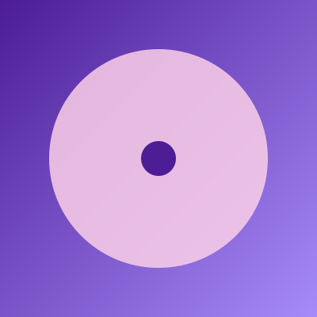

Каталог альбомів
Оберіть жанр на зображенні або скористайтеся фільтром нижче.
Усі релізи
-
Поп
Тиха вода
Оксана Рей, 2024
-
Поп

Інший берег
Оксана Рей, 2022
-
Рок
Rust & Roses
Black Harbor, 2025
-
Рок
Iron Sky
Black Harbor, 2022
-
Електроніка

Нічне місто
Lumen Fox, 2025
-
Електроніка
Скляні дощі
Lumen Fox, 2023
-
Фолк
Золоті поля
Дикий мед, 2023
-
Фолк
Колискова степу
Дикий мед, 2021